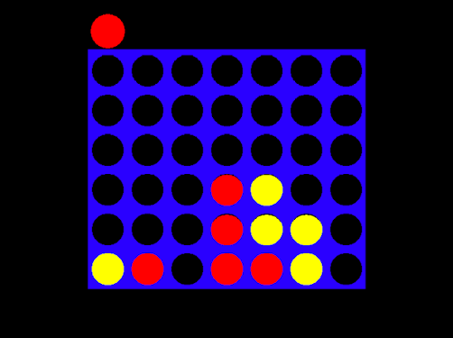

Java · Algorithmique
Jeu de plateau — Puissance 4
Développement d’un jeu de Puissance 4 en Java, avec mise en pratique de la programmation, de la représentation du plateau dans le terminal et de la logique algorithmique.

Description
Le projet consiste à gérer les actions des joueurs, l'état du plateau et les conditions de fin de partie.
J'ai dû décomposer le problème en plusieurs traitements afin de rendre le fonctionnement du jeu fiable et compréhensible.
Travail réalisé
- Représentation du plateau dans le terminal
- Gestion des tours de jeu
- Détection des alignements
- Gestion des conditions de victoire
- Tests des différents cas de jeu
Apprentissages critiques mobilisés
Ces apprentissages critiques sont ceux que je peux illustrer à travers ce projet. Ils sont également reliés aux autres projets dans la page Compétences.
Implémentation des différentes fonctionnalités du jeu.
Vérification du comportement du jeu sur différents cas.
Décomposition de la logique du jeu en traitements simples.
Réflexion sur les méthodes utilisées pour parcourir et analyser le plateau.
Preuve de progression
Je connaissais les bases de la programmation et des structures conditionnelles.
J'ai renforcé ma capacité à décomposer un problème et à transformer cette décomposition en logique de programme testable.
Mobiliser ces connaissances dans un projet concret, expliquer mes choix techniques et produire une solution fonctionnelle adaptée au problème posé.